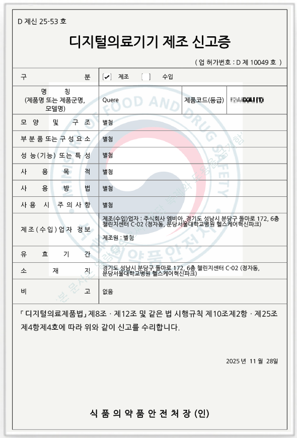
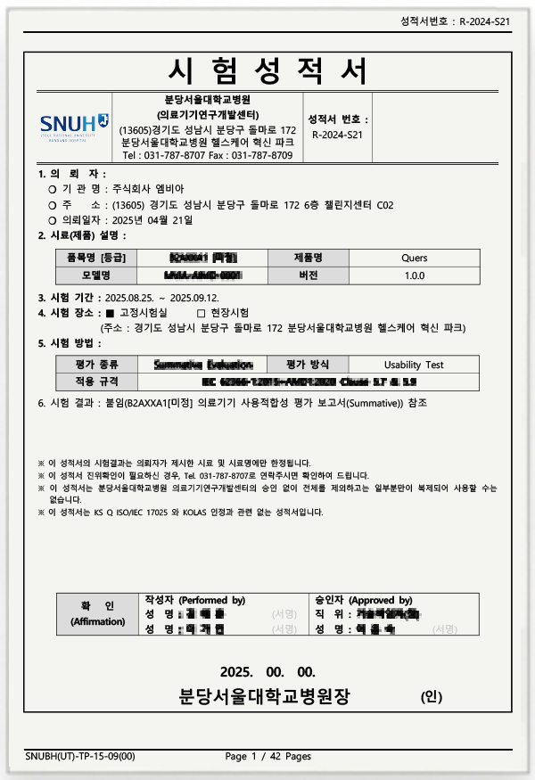

01
생체신호 · 환자정보 모니터링
환자 데이터를 모아 추세를 확인하고, 이상 징후를 조기에 파악하는 데 도움을 줍니다.
MVIA는 환자 데이터 모니터링과 AI 기반 기록 지원을 통해 의료 현장의 흐름을 새롭게 설계합니다.
Read more환자 관리와 기록 작성을 지원하는 AI를 중심으로, 의료기관 간 협력 기반을 함께 준비합니다.
환자 데이터를 모아 추세를 확인하고, 이상 징후를 조기에 파악하는 데 도움을 줍니다.
방문 전 문진 응답을 구조화해 전달하고, 의료진이 차트에 반영하기 쉽게 정리합니다.
환자와의 대화를 요약·정리해 제공하며, 차트 작성을 지원하는 AI 보조 역할을 합니다.
Quere는 환자 앱과 의료진 웹을 연결해, 데이터 수집부터 AI 기록 지원까지 하나의 흐름으로 이어줍니다.
환자 앱에서 생체신호·문진 응답·증상 정보를 모읍니다.
AI가 추세와 이상 징후를 파악하고, 문진·대화 내용을 정리합니다.
의료진 대시보드에서 확인하고, 차트 작성과 케어 결정을 돕습니다.
의사·공학자 공동 설계로 현장 UX와 검증 기반 AI를 결합합니다.
검증된 의료 지식 기반 분석과 상태 악화 시 알림으로, 데이터 기반 케어를 지원합니다.
복약 알림과 증상 체크로 밀착 케어를 제공하고, 누구나 쉽게 쓰는 UX를 지향합니다.
데이터 기반 환자 관리로 운영을 최적화하고, 병원의 새로운 수익 모델 확장을 돕습니다.
환자는 앱 하나로 예약, 복약, 측정을 관리하고, 의료진은 웹에서 진료와 기록을 끝냅니다.
의사와 공학자가 함께 만든 팀이, 의료기기 기준에 맞춰 개발하고 검증했습니다.

「디지털의료제품법」에 따른 제조 신고 수리. 업 허가번호 D 제10049호, 제품명 Quere (2025.11.28)

의료기기연구개발센터에서 IEC 62366 기준 Summative 사용적합성 평가 진행 (2025.08.25 ~ 09.12)
위기 대응보다 일상 진료에서 매일 쓰는 도구를 목표로 합니다.
고혈압, 당뇨처럼 꾸준한 관리가 필요하고 1년 이내 대면 진료 이력이 있는 환자
퇴원 뒤에도 웨어러블과 측정 기록으로 상태를 지켜봐야 하는 환자
섬이나 벽지에 살거나 거동이 불편해 병원 방문이 어려운 환자